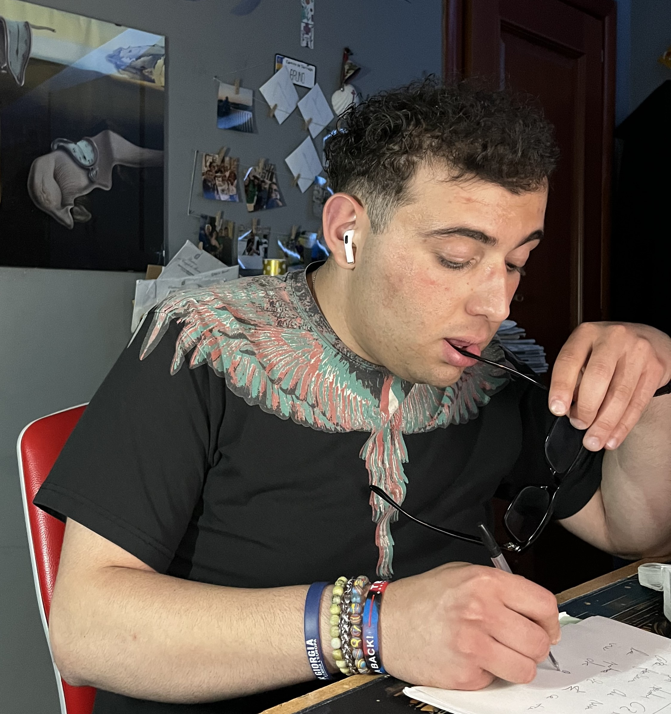
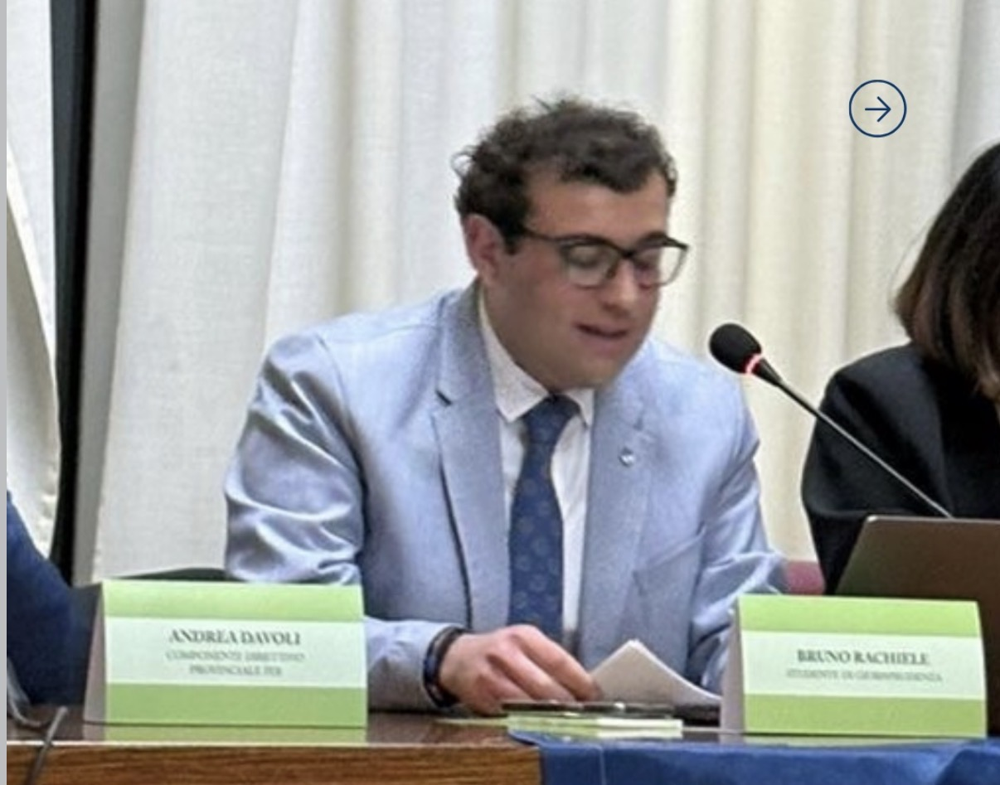
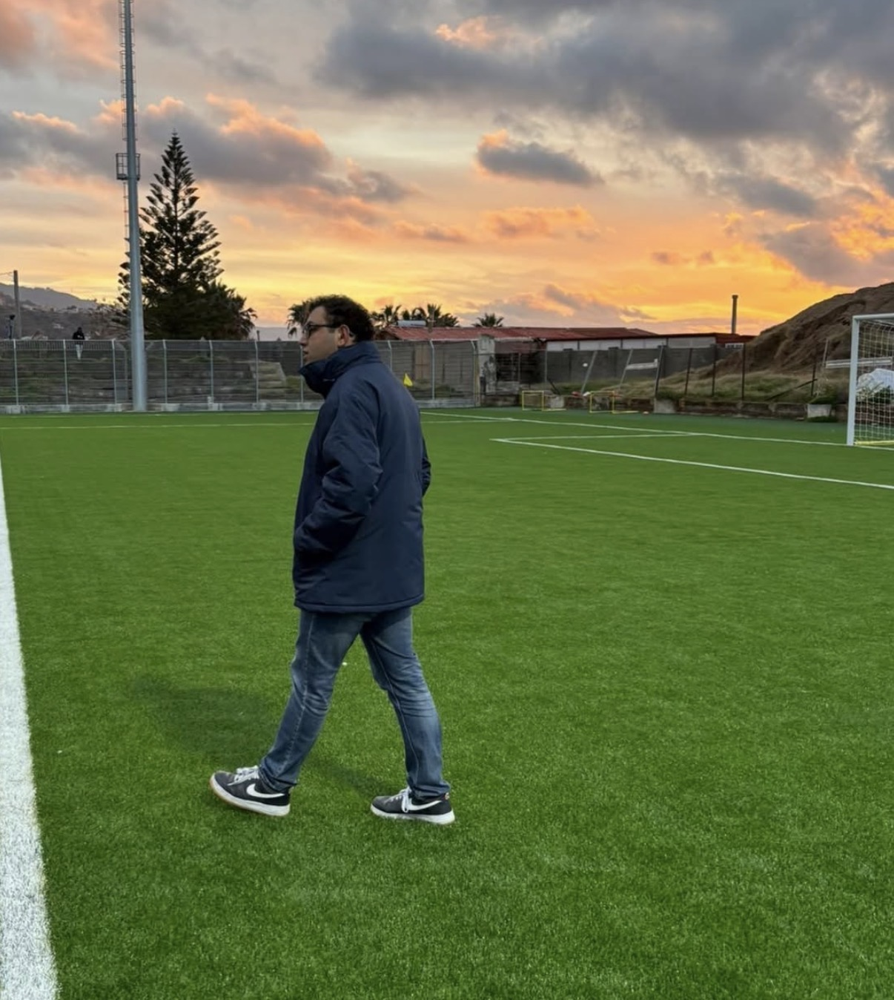
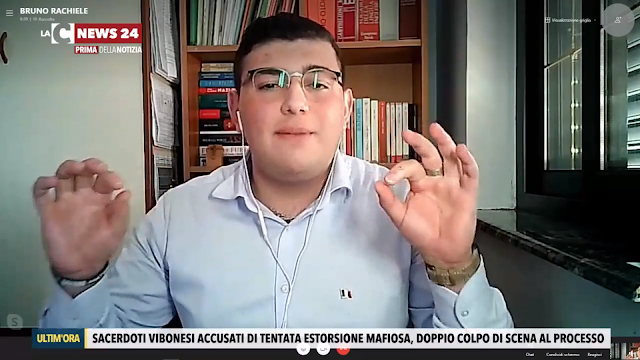
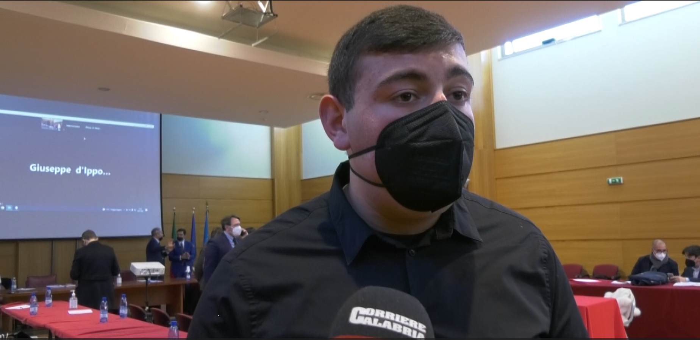

Bruno Rachiele
Nato a Soveria Mannelli il 19 ottobre 2004, è fondatore ed editore del portale di informazione e data-journalism brunorachiele.it, autore, attivista politico e dirigente sportivo impegnato nel tessuto culturale, istituzionale e sociale della Calabria.


Attività Editoriale, Politica e Accademica
Attività Editoriale & Data-Journalism
- Fondatore, editore e responsabile unico dei contenuti di brunorachiele.it, dedicato a politica italiana, Supermedia settimanali dei sondaggi elettorali e rassegna stampa.
- Ideatore dell'infrastruttura di certificazione crittografica trust.brunorachiele.it, conforme agli standard internazionali della Journalism Trust Initiative (JTI).
- Caporedattore di Ermes Giornalino UMG con pubblicazione settimanale di editoriali e approfondimenti di attualità.
Attivismo Politico & Sport
- Iscritto e membro attivo di Fratelli d'Italia (senza incarichi elettivi o istituzionali), con partecipazione a congressi locali, dibattiti e iniziative di coordinamento territoriale.
- Promotore di interventi pubblici su riforme istituzionali, giustizia e diritto allo studio.
- Dirigente dell'A.S.D. Pizzo Calcio, impegnato nella gestione societaria e nella promozione dello sport locale.
Rappresentanza Studentesca
- Ex rappresentante eletto alla Consulta Provinciale degli Studenti di Catanzaro (2021–2023).
- Capogruppo delle commissioni permanenti sul Diritto allo Studio e Trasporto Pubblico Locale (2021–2023) ed Edilizia Scolastica (2022–2023).
- Delegato in rappresentanza della Consulta Calabrese agli eventi sul territorio nazionale.
- Già militante e tesserato di Azione Studentesca fino al 2023.
Percorso Accademico
- Studente del Corso di Laurea Magistrale a ciclo unico in Giurisprudenza presso l'Università degli Studi Magna Græcia di Catanzaro.
- Focus di studio rivolto al Diritto della Navigazione Aerea, Diritto Internazionale e Diritto Pubblico Comparato.
Pubblicazioni e Formazione
Libri Pubblicati
- Rinascita dalle ombre. Superare le avversità e ispirare il cambiamento
- Haiku – La poesia dell’infinito
Istruzione Secondaria
- Diploma conseguito presso l'Istituto Tecnico Economico “Valentino De Fazio” (2018–2023).
Citazioni & Rassegna Stampa
“Appartengo a una generazione che ha perso fiducia in molte istituzioni. Ma se c'è un'istituzione che deve restare credibile, è la Giustizia. Non si tratta di essere contro qualcuno, ma di garantire equilibrio, responsabilità e trasparenza.”
“Presente in Aula anche il Rappresentante degli Studenti Bruno Rachiele che ha rivolto un saluto [...] ha sottolineato il dovere di ricordare chi ci ha preceduto e seguire le sue orme.”
“La rappresentanza studentesca non è un titolo da esibire, ma una responsabilità quotidiana al servizio della comunità studentesca e del diritto allo studio.”
“Trasporto Pubblico, Diritto allo Studio e Aule Piccolissime, pugno duro di Bruno Rachiele della Consulta studenti Catanzaro.”
Galleria Fotografica




